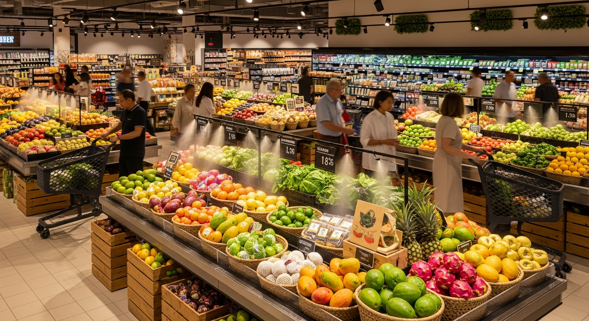

Local cuisine
Seafood and fish with rice
Five of Taniti’s restaurants serve mostly local fish and rice. These meals reflect the island’s location and provide visitors with a classic local dining option.
Five of Taniti’s restaurants serve mostly local fish and rice. These meals reflect the island’s location and provide visitors with a classic local dining option.
| Type | Count | Notes |
|---|---|---|
| Local fish and rice | 5 | Island-style dishes built around seafood and local staples |
| American-style meals | 3 | Familiar comfort foods for travelers who want classic options |
| Pan-Asian cuisine | 2 | Regional dishes with broader menu variety |

Many visitors spend time near Yellow Leaf Bay and other scenic areas, making Taniti a great place to pair meals with beach views and relaxed island surroundings.

These options make it easy for families, longer-stay travelers, and visitors in rentals or bed and breakfasts to buy snacks, drinks, and simple supplies.
Compare lodging styles or move on to the activities page.